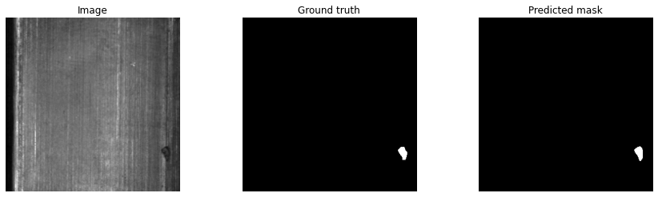

# Uncomment the following line if run in the jupyter tensorflow Docker image.
!pip install torch torchvision
!pip install -U git+https://github.com/qubvel/segmentation_models.pytorch
!pip install pytorch-lightning
!pip install mlflow
!pip install watermarkIn this notebook we use the segmentation models library built in PyTorch to train image segmentation models for the Magnetic tile defect dataset. This dataset is interesting because it is highly imbalanced, with less than 1% of pixels corresponding to the target class. Using the segmentation models library we can try several different loss functions, including binary cross entropy, focal losss, and Tversky loss to see their performance (see here for recommended loss functions). However, it turns out that using binary cross entropy is sufficient to get good results.
Aditionally, following an example in the segmentation models library, we’ll use PyTorch Lightning to further simplify the training process in PyTorch and MLflow to log hyperparameters and metrics.
This code is built with the help of Detection of Surface Defects in Magnetic Tile Images by Dr. Mitra P. Danesh.
To install the required packages, usually it’s sufficient to run the cell below (for example on Google Colab or Paperspace using the PyTorch runtime). If PyTorch is not installed, then uncomment the first line of the cell below to install it.
import os
import math
import random
import torch
import numpy as np
import segmentation_models_pytorch as smp
import pytorch_lightning as pl
from torch.utils.data import DataLoader
from torch.utils.data import Dataset as BaseDataset
from pytorch_lightning import Trainer
from pytorch_lightning.loggers import MLFlowLogger
# set the random seeds for reproducibility
random.seed(42)
torch.manual_seed(0)
np.random.seed(0)Loading data
from torch.utils.data import random_split
import torchvision.transforms as transforms
from torch.utils.data import Dataset
from PIL import Image
from glob import globFirst download the data locally.
%%capture
!wget -O data.zip https://github.com/abin24/Magnetic-tile-defect-datasets./archive/master.zip
!unzip data.zip
!mv Magnetic-tile-defect-datasets.-master dataclasses =['Blowhole', 'Crack','Free'] # classes/labels
image_paths = []
for c in classes:
# retreive image file paths recursively
images_found = glob('data/MT_' + c + '/Imgs/*.jpg',recursive=True)
if c== 'Free': # undersample the free class.
image_paths.extend( images_found[:80] )
else:
image_paths.extend( images_found )
random.shuffle(image_paths)len(image_paths)252Dataset
Writing helper class for data extraction, tranformation and preprocessing
https://pytorch.org/docs/stable/data. Also see the binary segmentation intro in the segmentation models library for more details on designing the Dataset class. For more sophisticated data augmentations, see the albumentations library and specifically this notebook from segmentation models.
import torchvision.transforms.functional as TF
import random
class SurfaceDefectDetectionDataset(Dataset):
def __init__(self, image_path_list, use_transform=False):
super().__init__()
self.image_path_list = image_path_list
self.use_transform = use_transform
def transform(self, image, target):
if random.random() < 0.5:
image = TF.hflip(image)
target = TF.hflip(target)
if random.random() < 0.5:
image = TF.vflip(image)
target = TF.vflip(target)
angle = random.choice([0, -90, 90, 180])
image, target = TF.rotate(image, angle), TF.rotate(target, angle)
return image, target
def __len__(self):
return len(self.image_path_list)
def __getitem__(self, idx):
# Open the image file which is in jpg
image = Image.open(self.image_path_list[idx])
# The mask is in png.
# Use the image path, and change its extension to png to get the mask's path.
mask = Image.open(os.path.splitext(self.image_path_list[idx])[0]+'.png')
# resize the images.
image, mask = TF.resize(image, (320,320)), TF.resize(mask, (320,320))
# Perform augmentation if required.
if self.use_transform:
image, mask = self.transform(image, mask)
# Transform the image and mask PILs to torch tensors.
image, mask = TF.to_tensor(image), TF.to_tensor(mask)
# Threshold mask, threshold limit is 0.5
mask = (mask >= 0.5)*(1.0)
#return the image and mask pair tensors
return image, masksplit_len = int(0.8*len(image_paths))
train_dataset = SurfaceDefectDetectionDataset(image_paths[:split_len], use_transform = True)
test_dataset = SurfaceDefectDetectionDataset(image_paths[split_len:], use_transform = False)We’ll randomly split the train and validation set, but fix the random seed to fix these datasets.
train_dataset, val_dataset = random_split(train_dataset, [int(split_len*0.9), split_len - int(split_len*0.9)], generator=torch.Generator().manual_seed(1))print('Length of train dataset: ', len(train_dataset))
print('Length of validation dataset: ', len(val_dataset))
print('Length of test dataset: ', len(test_dataset))Length of train dataset: 180
Length of validation dataset: 21
Length of test dataset: 51Let’s take a look at the dataset
import matplotlib.pyplot as plt
import random
sample_img, sample_msk = train_dataset[random.choice(range(len(train_dataset)))]
plt.subplot(1,2,1)
plt.title("Sample from trainining set")
plt.axis("off")
plt.imshow(sample_img.squeeze(), cmap='gray')
plt.subplot(1,2,2)
plt.axis("off")
plt.imshow(sample_msk.squeeze(), cmap='gray')
plt.show()
sample_img, sample_msk = val_dataset[random.choice(range(len(val_dataset)))]
plt.subplot(1,2,1)
plt.title("Sample from validation set")
plt.axis("off")
plt.imshow(sample_img.squeeze(), cmap='gray')
plt.subplot(1,2,2)
plt.axis("off")
plt.imshow(sample_msk.squeeze(), cmap='gray')
plt.show()
sample_img, sample_msk = test_dataset[random.choice(range(len(test_dataset)))]
plt.subplot(1,2,1)
plt.title("Sample from test set")
plt.axis("off")
plt.imshow(sample_img.squeeze(), cmap='gray')
plt.subplot(1,2,2)
plt.axis("off")
plt.imshow(sample_msk.squeeze(), cmap='gray')
plt.show()Take a look at more samples from the train set.
for i in range(3):
sample_img, sample_msk = train_dataset[random.choice(range(len(train_dataset)))]
plt.subplot(1,2,1)
plt.title("Image")
plt.axis("off")
plt.imshow(sample_img.squeeze(), cmap='gray')
plt.subplot(1,2,2)
plt.title("Mask")
plt.axis("off")
plt.imshow(sample_msk.squeeze(), cmap='gray')
plt.show()Find the weight of positive and negative pixels.
The number of positive pixels is less than 1% of the total, showing that the dataset is highly imbalanced.
positive_weight = 0
negative_weight = 0
total_pixels = 0
img_shape = train_dataset[0][0].shape
for _, target in train_dataset:
positive_weight += (target >= 0.5).sum().item()
negative_weight += (target < 0.5).sum().item()
total_pixels += (img_shape[1] * img_shape[2])
positive_weight /= total_pixels
negative_weight /= total_pixels
print('positive weight = ',positive_weight, '\tnegative weight = ', negative_weight)positive weight = 0.002119411892361111 negative weight = 0.9978805881076389Create model and train
from itertools import islice
def show_predictions_from_batch(model, dataloader, batch_num=0, limit = None):
"""
Method to visualize model predictions from batch batch_num.
Show a maximum of limit images.
"""
batch = next(islice(iter(dataloader), batch_num, None), None) # Selects the nth item from dataloader, returning None if not possible.
images, masks = batch
with torch.no_grad():
model.eval()
logits = model(images)
pr_masks = logits.sigmoid()
pr_masks = (pr_masks >= 0.5)*1
for i, (image, gt_mask, pr_mask) in enumerate(zip(images, masks, pr_masks)):
if limit and i == limit:
break
fig = plt.figure(figsize=(15,4))
ax = fig.add_subplot(1,3,1)
ax.imshow(image.squeeze(), cmap='gray')
ax.set_title("Image")
ax.axis("off")
ax = fig.add_subplot(1,3,2)
ax.imshow(gt_mask.squeeze(), cmap='gray')
ax.set_title("Ground truth")
ax.axis("off")
ax = fig.add_subplot(1,3,3)
ax.imshow(pr_mask.squeeze(), cmap='gray')
ax.set_title("Predicted mask")
ax.axis("off")We’ll create a PyTorch Lightning module to help streamline the training process. In the class initalization, it uses the segmentation models library, via the call to smp.create_model, to build a PyTorch model which operates on one channel images for binary segmentation. Many state of the art models are possible with the segmentation models library. However, we’ll typically use the Unet with resnet34 backbone.
We use the SoftBCEWithLogitsLoss to train the model, but other losses recommended here, can easily be used as well.
We’ll also use the segmentation models library to monitor the intersection over union metric. Due to the highly imbalanced nature of this dataset, this will give us a much better indicator of model quality than the accuracy.
class SurfaceDefectModel(pl.LightningModule):
def __init__(self, arch, encoder_name, loss = "SoftBCEWithLogitsLoss" , **kwargs):
super().__init__()
self.model = smp.create_model(
arch, encoder_name=encoder_name, encoder_weights = None, in_channels=1, classes=1, **kwargs
)
self.arch = arch
self.encoder_name = encoder_name
self.loss_name = loss
if loss == "DiceLoss":
self.loss_fn = smp.losses.DiceLoss(smp.losses.BINARY_MODE, from_logits=True)
elif loss == "TverskyLoss":
self.loss_fn = smp.losses.TverskyLoss(smp.losses.BINARY_MODE, from_logits=True, alpha=0.3,beta=0.7)
elif loss == "FocalLoss":
self.loss_fn = smp.losses.FocalLoss(smp.losses.BINARY_MODE)
else:
self.loss_fn = smp.losses.SoftBCEWithLogitsLoss()
self.printed_run_id = None
self.run_id = None
def forward(self, image):
return self.model(image)
def shared_step(self, batch, stage):
image = batch[0]
# Shape of the image should be (batch_size, num_channels, height, width)
# if you work with grayscale images, expand channels dim to have [batch_size, 1, height, width]
assert image.ndim == 4
# Check that image dimensions are divisible by 32,
# encoder and decoder connected by `skip connections` and usually encoder have 5 stages of
# downsampling by factor 2 (2 ^ 5 = 32); e.g. if we have image with shape 65x65 we will have
# following shapes of features in encoder and decoder: 84, 42, 21, 10, 5 -> 5, 10, 20, 40, 80
# and we will get an error trying to concat these features
h, w = image.shape[2:]
assert h % 32 == 0 and w % 32 == 0
mask = batch[1]
# Shape of the mask should be [batch_size, num_classes, height, width]
# for binary segmentation num_classes = 1
assert mask.ndim == 4
# Check that mask values in between 0 and 1, NOT 0 and 255 for binary segmentation
assert mask.max() <= 1.0 and mask.min() >= 0
logits_mask = self.forward(image)
# Predicted mask contains logits, and loss_fn param `from_logits` is set to True
loss = self.loss_fn(logits_mask, mask)
# Lets compute metrics for some threshold
# first convert mask values to probabilities, then
# apply thresholding
prob_mask = logits_mask.sigmoid()
pred_mask = (prob_mask > 0.5).float()
# We will compute IoU metric by two ways
# 1. dataset-wise
# 2. image-wise
# but for now we just compute true positive, false positive, false negative and
# true negative 'pixels' for each image and class
# these values will be aggregated in the end of an epoch
tp, fp, fn, tn = smp.metrics.get_stats(pred_mask.long(), mask.long(), mode="binary")
return {
"loss": loss,
"tp": tp,
"fp": fp,
"fn": fn,
"tn": tn,
}
def shared_epoch_end(self, outputs, stage):
# aggregate step metics
tp = torch.cat([x["tp"] for x in outputs])
fp = torch.cat([x["fp"] for x in outputs])
fn = torch.cat([x["fn"] for x in outputs])
tn = torch.cat([x["tn"] for x in outputs])
# per image IoU means that we first calculate IoU score for each image
# and then compute mean over these scores
per_image_iou = smp.metrics.iou_score(tp, fp, fn, tn, reduction="micro-imagewise")
# dataset IoU means that we aggregate intersection and union over whole dataset
# and then compute IoU score. The difference between dataset_iou and per_image_iou scores
# in this particular case will not be much, however for dataset
# with "empty" images (images without target class) a large gap could be observed.
# Empty images influence a lot on per_image_iou and much less on dataset_iou.
dataset_iou = smp.metrics.iou_score(tp, fp, fn, tn, reduction="micro")
accuracy = smp.metrics.accuracy(tp, fp, fn, tn)
metrics = {
f"{stage}_per_image_iou": per_image_iou,
f"{stage}_dataset_iou": dataset_iou,
f"{stage}_accuracy": accuracy,
f"{stage}_loss": torch.tensor([x["loss"].item() for x in outputs]).mean()
}
# Log the metrics
#for key, val in metrics.items():
# self.logger.experiment.log_metric(self.logger.run_id ,key, val.mean().item(), step=self.current_epoch)
self.logger.log_metrics({key: val.mean().item() for key, val in metrics.items() }, step=self.current_epoch)
# only record the loss in mlflow
del metrics[f"{stage}_loss"]
if not self.printed_run_id and hasattr(self.logger, "run_id"):
print('Run id: ', self.logger.run_id )
self.printed_run_id = True
# This will be available in tensorboard.
self.log_dict(metrics, prog_bar=True)
def training_step(self, batch, batch_idx):
return self.shared_step(batch, "train")
def training_epoch_end(self, outputs):
self.shared_epoch_end(outputs, "train")
def validation_step(self, batch, batch_idx):
return self.shared_step(batch, "valid")
def validation_epoch_end(self, outputs):
self.shared_epoch_end(outputs, "valid")
def test_step(self, batch, batch_idx):
return self.shared_step(batch, "test")
def test_epoch_end(self, outputs):
return self.shared_epoch_end(outputs, "test")
def configure_optimizers(self):
return torch.optim.Adam(self.parameters(), lr=0.0001)
def on_fit_end(self):
# Log hyperparameters to mlflow.
self.logger.log_hyperparams({ "arch": self.arch, "encoder_name": self.encoder_name, "loss": self.loss_name })
if hasattr(self.logger, "run_id"):
self.run_id = self.logger.run_idNote that we added the extra hook on_fit_end to save hyperparameters to MLflow. More hooks are available at the official documentation lightning hooks.
batch_size = 8
train_loader = DataLoader(train_dataset, batch_size=batch_size, shuffle=True, num_workers=2)
valid_loader = DataLoader(val_dataset, batch_size=1, shuffle=False, num_workers=2)model = SurfaceDefectModel("Unet", "resnet34")Sanity check the model by showing its predictions.
show_predictions_from_batch(model, train_loader, batch_num=0, limit=1)We’ll use the ModelCheckpoint callback from PyTorch lightning to save the best model, as measured by the intersection over union metric.
from pytorch_lightning.callbacks import ModelCheckpoint
from pathlib import Path
checkpoint_callback = ModelCheckpoint(
monitor="valid_dataset_iou",
dirpath="./models",
filename= f"surface_defect_{model.arch}_{model.encoder_name}_{model.loss_name}",
save_top_k=3,
mode="max",
)
# Add the model directory if it it doesn't exist
Path("./models").mkdir(exist_ok=True)Now with the help of PyTorch lightning, we can train and log to MLflow, with a few lines of code.
mlf_logger = MLFlowLogger(experiment_name="lightning_logs")
trainer = pl.Trainer(
gpus=1,
max_epochs=200,
log_every_n_steps=math.ceil(len(train_dataset)/batch_size),
callbacks=[checkpoint_callback],
logger=mlf_logger,
# For debugging purposes, uncomment the line below.
#fast_dev_run=True
)
trainer.fit(
model,
train_dataloaders=train_loader,
val_dataloaders=valid_loader,
)Load the best model to analyze its performance.
model.load_from_checkpoint(f"models/surface_defect_{model.arch}_{model.encoder_name}_{model.loss_name}.ckpt", arch = model.arch, encoder_name= model.encoder_name, loss = model.loss_fn.__class__.__name__)# run validation dataset
trainer.validate(model, dataloaders=valid_loader, verbose=False)LOCAL_RANK: 0 - CUDA_VISIBLE_DEVICES: [0][{'valid_accuracy': 0.9991360902786255,
'valid_dataset_iou': 0.6411741971969604,
'valid_per_image_iou': 0.7908229827880859}]Visualize the model performance on the validation set.
for i in range(min(len(valid_loader), 5)):
show_predictions_from_batch(model, valid_loader, batch_num=i)Analyze best saved model on the Test set
test_loader = DataLoader(test_dataset, batch_size=8, shuffle=False, num_workers=2)# run test dataset
trainer.test(model, dataloaders=test_loader, verbose=False)LOCAL_RANK: 0 - CUDA_VISIBLE_DEVICES: [0][{'test_accuracy': 0.9993589520454407,
'test_dataset_iou': 0.6736205816268921,
'test_per_image_iou': 0.7249590158462524}]Finally, visualize the model performance on the test set.
show_predictions_from_batch(model, test_loader, batch_num=0)
%load_ext watermark
%watermark --iversions -vPython implementation: CPython
Python version : 3.9.7
IPython version : 7.31.0
torch : 1.12.0
pytorch_lightning : 1.6.4
numpy : 1.19.5
torchvision : 0.13.0
PIL : 8.4.0
segmentation_models_pytorch: 0.3.0